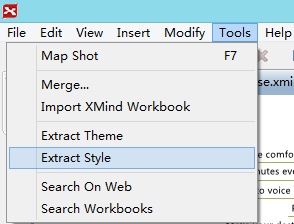
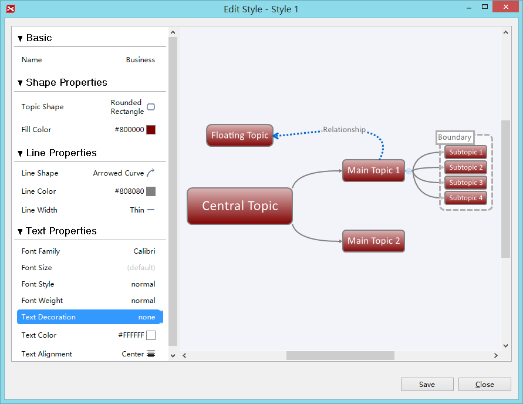
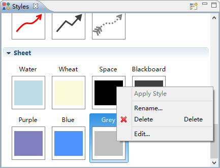

Within XMind, the style is the attribute collection of the map object, which can be extracted, saved and reused. Style editor can help us to design style and preview it at the same time.
Extract the style and redesign it with style editor
- Select a target object (topic, relationship, boundary or sheet) in your XMind.
- Choose "Tools -- Extract style" from menu.
 - Change the print settings: Print content, Page, Orientation, Margins, Header/Footer text.
- Design the style at the pop up interface
- Topic: name, shape properties, line properties and text properties
- Relationship: name, shape properties, line properties and text properties
- Boundary: name, shape properties, line properties and text properties
- Sheet: name, background color, tapered lines and multi-branch colors
- Click 'Save'.

Redesign the existing styles
- Open the style view by choosing "View-Style" from software menu
- Right-clicking on the target style and choose "edit"
- Modify the properties set and click "save" button
